아스타나키즈 입장 데스크
직원 메뉴얼 · ver.2.10 기준
네이버 예약 입장 · 현장 결제(POS) · 열쇠 관리 · 아마노 주차등록을
POS PC 한 화면에서 처리합니다
차례
1. 화면 한눈에 보기 · 2. 아침 준비 · 3. 네이버 예약자 입장 · 4. 연속예약
5. 현장입장(POS 결제) · 6. 열쇠 반납과 초과요금 · 7. 주차등록
8. 이용완료 횟수와 사은권 · 9. 입장권 출력(프린터) · 10. 반납안내 커튼 · 11. 문제가 생겼을 때
12. 메모장 · 근무자 메뉴얼 (화면 안)
1. 화면 한눈에 보기
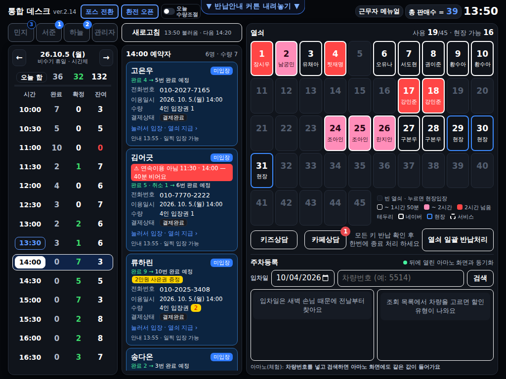
| 왼쪽 · 메모 · 시간표 | 맨 위 메모 상자 = 근무자마다 하나 + 관리자(12장 · 숫자 = 아직 완료 안 한 것, 칠해져 있으면 새 전달). 그 아래 날짜(← →), 오늘 합, 시간별 완료 · 확정 · 잔여. 완료 = 회색, 확정 = 파랑(0이면 흰색), 잔여 = 흰색(0이면 빨강).
잔여 = 네이버 판매 수량 − 확정 − 완료. 시간 줄을 누르면 그 시간만 네이버에서 다시 불러옵니다. 시간제인 날은 17:30 과 18:00 사이 빨간 선 = 18:00부터 무제한. |
|---|
| 가운데 · 예약자 명단 | 고른 시간의 예약자 카드. 미입장 카드가 위에 이름 가나다순, 입장을 처리하면 그 카드는 밑으로 내려가 입장완료 카드끼리 다시 가나다순. 파랑 [미입장] = 입장할 손님, 회색 = 입장완료(이용완료). 위의 [새로고침] = 하루 전체를 네이버에서 다시 불러옴. |
|---|
| 오른쪽 위 · 열쇠판 | 1~45번. 바탕색 = 이용 시간: 빈 열쇠(흐림) · 이용 중 · 1시간 50분 ~ 2시간(분홍) · 반납 시간 지남(빨강). 테두리 = 누구 열쇠: 네이버 예약 = 흰색 · 현장 = 파랑 · 서비스 키 = 흰 점선. 색 설명은 45번 오른쪽 빈 칸에 있습니다. 열쇠판 아래 오른쪽 [열쇠 일괄 반납처리](열쇠 2개 이상 나가면 켜짐) = 영업 마감 때 모든 열쇠를 한 번에 반납(6장). |
|---|
| 열쇠판 아래 왼쪽 · 상담 | [키즈상담] [카페상담] = 네이버 톡톡 상담. 손님이 새로 보낸 메시지가 있으면 버튼에 붉은 원 + 숫자(상담 목록 줄의 붉은 원을 더한 안 읽은 말풍선 수 · 줄 시각이 '방금'이어도 셈). 누르면 그 톡톡 상담 창이 크게 열리고, 상담을 마친 뒤 창의 X를 누르면 데스크로 돌아옵니다. 읽은 만큼 숫자가 줄고, 다 읽으면 숫자가 없어집니다 (20초마다 확인). 주황 ! = 숫자를 못 읽는 중(네이버 로그인 풀림 등, 버튼에 마우스를 올리면 까닭) → 2장 '처음 한 번만'. |
|---|
| 오른쪽 아래 · 주차등록 | 뒤에 열린 아마노 화면과 같은 값이 들어갑니다 (아마노 화면을 직접 만질 필요 없음). 맨 아래 줄 = 아마노 진행 상황 · 실패 알림. |
|---|
| 맨 위 | 왼쪽 통합 데스크 ver.n (버전 숫자가 바뀌면 새 설치본 · 한 번 누르면 데스크만 작업표시줄로 내려감 — POS 등 다른 창은 그대로 · 다시 올릴 때는 작업표시줄의 데스크 아이콘) · [포스 전환] = 결제와 상관없이 OKPOS 화면으로 (POS를 작업표시줄로 최소화하면 데스크로 돌아옴) · [환전 오픈] = POS와 연결된 현금통을 엶 (POS가 꺼져 있어도, 영수증 프린터를 통해 · 운영 설정 → 프린터 설정의 현금통 단자를 열리는 쪽(2번/5번)으로 두면 더 빠름) · [오늘 수량조절] 스위치 = 그날만 네이버 판매 수량 자동조절을 켜고 끔 — 사람이 몰리는 비수기 평일엔 켜요 (다음 날은 기본으로 · 끝 장) · 가운데 초록 반납안내 커튼 손잡이(10장) · [총 판매수 = n] (고른 날의 네이버 이용완료 + 현장구매 장수. 누르면 입장권 목록: 열쇠를 가져간 순서(최근 입장이 맨 위) · 이름(현장은 현장구매자) · 열쇠 번호(반납해도 남음, 일괄 = 일괄 반납으로 돌려받은 열쇠) · 입장시간 · 장수 · [기록 삭제] = 시험으로 잡힌 손님을 판매수 · 통계에서 뺌, 네이버 기록은 그대로 · 되살리기 가능. ◀ ▶ = 2주 전까지 날짜 이동, 열쇠 번호로 찾기 = 최근 2주 그 열쇠를 가져간 사람, 줄을 누르면 고객 카드(전화번호) → 6장) · [근무자 메뉴얼] = 화면 안 메뉴얼(12장) · 맨 오른쪽 지금 시각 (관리자: 1.5초 안에 두 번 누르면 운영 설정). |
|---|
네이버 예약은 09:50부터 매시 20분 · 50분에 자동으로 불러옵니다(19:20까지). 그 사이에 들어온 예약(예: 09:58에 10:00 예약)은 [새로고침] 또는 그 시간 줄을 누르면 바로 나옵니다.
2. 아침 준비
- POS PC를 켜고 OKPOS를 평소처럼 켭니다.
- 바탕화면의 아스타나키즈 입장 데스크를 켭니다. 뒤에 아마노 · 네이버 창이 함께 열리고, 맨 앞에 입장 데스크가 뜹니다.
- 아마노는 저장된 아이디로 자동 로그인합니다.
- 네이버는 로그인이 유지됩니다. 풀렸으면 새로고침 버튼 옆에 빨간 글로 "네이버에 로그인해 주세요"가 뜹니다 → 10장 참고.
- 새로고침 옆에 "○○:○○ 불러옴"이 보이면 준비 끝입니다.
아마노 · 네이버 창은 닫히지 않습니다(X를 누르면 데스크 뒤로 돌아감). 프로그램을 끌 때는 입장 데스크 창을 닫으면 모두 꺼집니다.
처음 한 번만 (관리자)
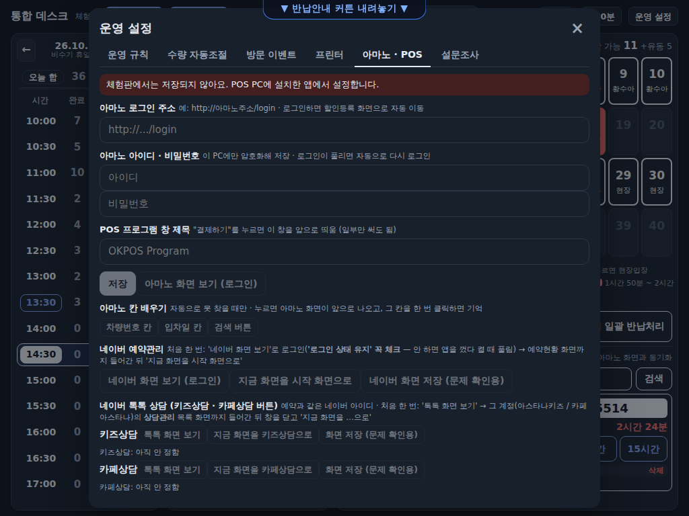
- 운영 설정(맨 오른쪽 시계를 1.5초 안에 두 번) → API 연결 설정: 아마노 로그인 주소 · 아이디 · 비밀번호(이 PC에만 암호화 저장) · POS 창 제목(OKPOS Program).
- 네이버 화면 보기 (로그인) → 네이버 로그인('로그인 상태 유지' 꼭 체크) → 예약 → 예약현황 · 일간 화면 → 지금 화면을 시작 화면으로.
- 네이버 톡톡 상담 (같은 칸 아래): 키즈상담 줄의 톡톡 화면 보기 → (로그인이 필요하면 예약과 같은 네이버 아이디로) 아스타나키즈 계정의 상담관리 목록 화면까지 → 창의 X → 지금 화면을 키즈상담으로. 카페상담 줄도 같은 방법으로 카페아스타나 계정. 주소는 이 PC에만 저장됩니다.
- 왼쪽 메뉴의 '상담관리 111' 같은 숫자는 상담완료를 안 눌러 쌓인 수라 쓰지 않습니다. 버튼 숫자는 상담 목록 줄마다 붙는 붉은 원만 더한 것입니다.
3. 네이버 예약자 입장
- 왼쪽 시간표에서 손님의 예약 시간을 누릅니다 → 가운데에 예약자 카드.
- 손님 이름을 찾아 카드를 누릅니다.
- 열쇠판에서 예약 수량만큼 열쇠 번호를 누릅니다 (흐린 번호는 이미 지급된 열쇠).
- [등록 완료] → 기다리지 않고 바로 열쇠가 등록되고 입장권이 출력됩니다. 네이버 이용완료는 뒤에서 자동으로 눌립니다 (카드에 "네이버 이용완료 처리 중…").
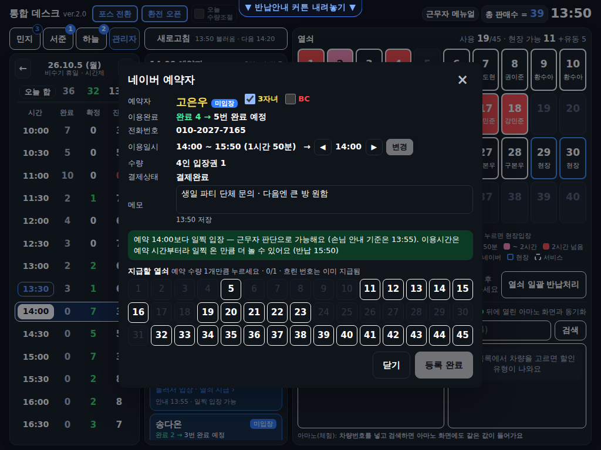
- 손님 안내는 예약 5분 전 입장입니다. 하지만 예약 당일이면 근무자 판단으로 더 일찍 들여보낼 수 있습니다 (예: 내부가 비었을 때 "오늘은 예약이 적어 일찍 들어가 더 놀고 가세요"). 이용시간은 예약 시간부터 셉니다.
- 다른 날 예약은 입장 처리가 되지 않습니다.
- 뒤에서 네이버 이용완료가 안 되면 새로고침 옆에 빨간 글 "⚠ 네이버 이용완료 실패 n건: 이름 시간"이 남고, 카드에 "네이버 이용완료 대기 — 까닭"이 뜹니다. 2분마다 자동으로 다시 하고, 계속 안 되면 네이버 화면에서 그 손님을 직접 이용완료합니다.
- 예약했다 취소만 하고 이용완료가 한 번도 없는 손님(네이버 카드에 '취소 n'만 있음)도 신규(완료 0 → 1번 완료 예정)로 바로 나옵니다.
- 네이버 카드에서 방문 횟수를 못 읽은 손님은 입장권이 몇 초 늦게 나옵니다 (뒤에서 이용완료하며 '완료 n'을 읽은 뒤 출력).
대리예약 · 입금대기
- 대리예약: 다른 사람이 대신 예약한 경우 카드에 대리예약 스티커와 함께 예약자 정보 밑에 방문자(실제 오는 손님 이름 · 전화번호)가 나옵니다.
- 입금대기(주황 스티커): 네이버에서 결제를 안 한 예약입니다. 네이버를 불러올 때마다(30분마다) 지금 ~ 2시간 안 타임에 입금대기 예약이 있으면 데스크가 자동으로 [예약취소]합니다. 결제한 예약은 누르지 않습니다(취소 직전에 다시 확인). 운영 설정 → 네이버 설정 맨 아래에서 끄고 켜고, 취소 기록을 볼 수 있어요.
- 예약 수량이 2장 이상이면 카드의 수량 숫자가 노랑 네모 · 빨강 글씨로 보입니다 (열쇠를 여러 개 줘야 함).
고객 메모 · 3자녀 · BC
- 예약자 창(입장 전에도 · 뒤에도)과 열쇠 창의 결제상태 밑 메모 칸에 그 손님에 대해 적어 두면 다음 방문 때도 보여요. 스크롤 없이 2줄까지 — 넘으면 더 안 써져요. 적으면 저절로 저장되고 칸 밑에 '11:52 저장'이 보여요.
- 이름 옆 [3자녀]를 체크하면 그 손님 이름이 노랑, BC ①②③(블랙컨슈머 원아웃 · 투아웃 · 쓰리아웃)을 누르면 빨강으로 보여요 (둘 다면 빨강) — 예약 카드 · 예약자 창 · 열쇠 창. 메모가 있는 손님 카드에는 [메모]가 붙어요 (마우스를 올리면 내용).
- BC ①②③은 야구 아웃처럼 쌓여요 (②를 누르면 ① ② · 같은 숫자를 다시 누르면 한 단계 내림). 관리자가 켜 둔 대응만: 원아웃 = 카드 테두리 빨강 · 투아웃 = 마일리지 미적용(사은권 없음 · 카드 테두리는 빨강 점선 · 입장권은 관리자가 정한 투아웃 양식) · 쓰리아웃 = 예약 불가 — 네이버를 불러올 때 그 손님 예약이 보이면 앱이 알아서 네이버에서 전액환불로 취소해요(되돌릴 수 없음). 두 번 안 되면 카드에 [다시 취소]가 나와요 — 누르거나 네이버에서 직접 취소하세요. 직접 취소할 때는 '예약 취소' 화면에서 ○ 전액환불을 꼭 누르고 [예약 취소] (기본 '동의된 환불기준'은 당일 0% 환불).
- ③(쓰리아웃)을 누르면 사유를 쓰는 창이 떠요. 사유를 쓰고 [확인 — 쓰리아웃]을 눌러야 쓰리아웃이 되고, 사유는 고객 카드와 운영 설정 → 고객 세부 관리 목록에 남아요.
- 손님은 전화번호로 알아봐요. 네이버 예약에 적어 둔 메모는 불러오지 않아요 (손님마다 읽으면 점점 느려져서 — 이제부터 데스크에 새로 적어요). 메모는 이 PC에만 저장되고 다른 곳으로 보내지 않아요.
- 지우려면 메모를 비우고 체크를 모두 빼면 돼요.
예약시간 변경 (데스크에서만)
- 네이버 예약 시간은 데스크에서 바꿀 수 없습니다. 대신 손님 카드를 다른 시간으로 옮길 수 있어요 (예: 13:30 예약 손님이 14:30에 온다고 연락).
- 카드를 눌러 예약자 창 → 이용일시 옆 ◀ 시간 ▶로 고르고 [변경] → 카드가 그 시간 명단으로 갑니다. 카드에 주황 네이버 13:30(원래 시간) 표시가 붙어요.
- 옮긴 카드는 새로고침해도 · 프로그램을 다시 켜도 옮긴 시간에 있습니다. 이용시간 · 반납 시각은 옮긴 시간부터 셉니다.
- 입장(등록 완료)하면 네이버 이용완료는 네이버의 원래 시간 칸에서 눌립니다. 되돌리려면 원래 시간으로 골라 [변경].
- 같은 손님이 같은 시간에 나눠 한 예약은 같이 옮겨집니다.
4. 연속예약
같은 손님(이름 + 전화번호)이 2시간 이내 간격으로 이어서 예약하면 퇴장 없이 이어서 쓰는 손님입니다.
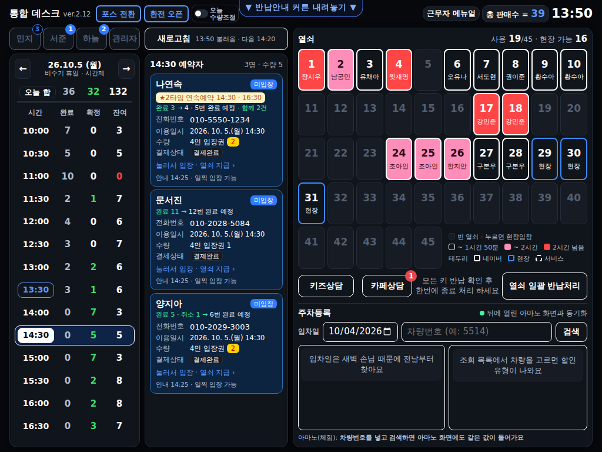
| 카드 표시 | 뜻 · 할 일 |
|---|
| ★2타임 연속예약 (노랑, 첫 예약) | 연속 이용자 — 신발장 관리. 첫 예약 카드에서만 입장 처리하면 뒤 예약도 모두 이용완료됩니다. |
| 연속예약 2/2 · 첫 예약 14:30 (회색) | 뒤 예약. 따로 입장 처리하지 않습니다. |
| ⚠ 연속이용 아님 (빨강) | 2시간보다 긴 간격(예: 11:30 · 14:00). 이어서 쓰지 않습니다 — 예약마다 1시간 50분, 끝나면 나갔다가 다음 예약 시간에 다시 입장하도록 안내. |
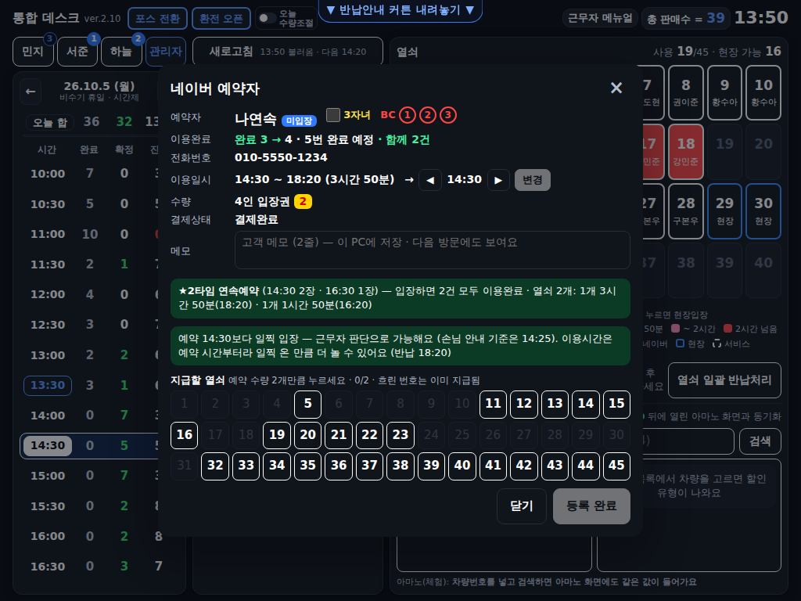
- 끝나는 시각 = 마지막 예약 시간 + 1시간 50분 (2시간 간격이면 2타임 3시간 50분, 3타임 5시간 50분).
- 열쇠는 첫 예약 수량만큼, 열쇠마다 끝나는 시각이 따로 정해집니다. 예: 12:00 3장 + 14:00 2장 → 열쇠 2개 15:50, 1개 13:50.
- 뒤 시간에 사람이 늘어나는 예약은 묶음에서 빠집니다 → 그 예약 카드에서 따로 입장 처리.
이용 중에 손님이 뒤 타임을 또 예약하면 (추가 예약)
네이버를 불러올 때마다(매시 20 · 50분 · 새로고침) 열쇠를 가진 손님과 같은 사람(이름 + 전화번호)의 뒤 타임 예약을 찾아 그 손님 열쇠 창 오른쪽에 빨간 알림을 띄웁니다. 지금 열쇠 정보와 같이 보고 결정하세요.
| 예약 간격 (지금 마지막 타임에서) | 데스크가 하는 일 · 근무자가 고를 것 |
|---|
| 딱 2시간 뒤 | 열쇠 반납 시각을 자동 연장(그 예약 + 1시간 50분) → [확인] 하면 그 예약 네이버 이용완료 |
| 2시간보다 가까움 (30분 ~ 1시간 30분) | 이 예약 시간부터 1시간 50분 또는 처음부터 이어서 3시간 50분 중 고르고 [확인] → 이용완료 |
| 2시간 30분 이상 떨어짐 | 당겨서 이어서(3시간 50분) + 이용완료 또는 그대로 두기(이용완료 안 함 · 그 시간에 따로 입장) |
- 예약 인원이 지금 열쇠보다 많으면 빨간 글로 알려 줍니다 → 늘어난 인원은 열쇠를 더 드리세요.
- 그 추가 예약이 10 · 20번째(사은권 회차)면 알림에 노란 글로 "이 예약을 이용완료하면 10번째 예약완료 — 2만원 사은권을 드려야 해요 · 손님은 이용 중 — 010-… 로 연락해 전달하세요". [확인]하면 사은권 전달 전이 그 손님 열쇠 창 맨 위 · 예약 카드에 남아요 → 손님께 연락해 사은권을 드리고 [사은권 전달함]을 누르세요.
- 사은권을 드리기 전에 그 손님 열쇠를 반납(또는 일괄 반납)하려 하면 먼저 물어요: 드렸으면 [확인](전달함으로 남김), 아직이면 [취소]하고 먼저 드리세요.
5. 현장입장 (POS 결제)
열쇠판에서 빈 열쇠를 누르면 현장입장 창이 뜹니다. 왼쪽 = 할 일 안내(지금 할 단계가 파랗게), 오른쪽 = 위에서 아래로 차례대로 누르면 됩니다.
- ① 판매 가능한지: 맨 위 색 — 초록 = 판매 가능(현장 판매 가능 수), 빨강 = 지금은 판매 불가(예약 손님 자리). 유동 열쇠를 쓰는 때는 빈 좌석을 보고 [빈 좌석 확인했어요].
- ② 입장권 수(− +)를 손님이 원하는 만큼 맞춥니다 (열쇠가 다음 빈 번호로 이어서 붙음). 입장 타임은 바로 앞 30분 칸이 기본(예: 10:12 → 10:00) — 앞뒤로 바꿀 땐 ◀ ▶.
- ③ [POS로 이동해서 n장 결제하기]: 초록이면 판매 가능, 빨강이면 판매 불가라 눌러도 POS로 넘어가지 않습니다. 입장권 매수별 인원을 안내하고 고른 수만큼 POS에서 결제 → POS를 최소화하면 이 창으로 돌아옵니다 (버튼에 ✓).
- ④ 전화번호: 열쇠를 드리기 전에 받습니다 (열쇠 미반납 때 연락). 010은 미리 들어가 있고 뒤 8자리를 키패드로.
- ⑤ [결제 완료 · 열쇠 등록](아래 오른쪽) → 입장권이 나오면 열쇠와 함께 드립니다. ③으로 POS에 다녀와야 눌립니다 — 결제한 뒤 입장권 수를 바꾸면 다시 POS로.
결제 없이 들어오는 이벤트 · 쿠폰 손님은 ③(POS)을 건너뛰고 아래 왼쪽 [이벤트 입장](점선)을 누릅니다 (전화번호 · 설문 번호만 있으면 눌림). 관리자가 운영 설정 → 기타 → '현장 이벤트 이름'에 예를 들어 한가위라고 넣으면 버튼이 [한가위 이벤트 입장]으로 바뀌어요. 열쇠 · 입장권(구분 '한가위 이벤트') · 설문 · 인원 · 반납 · 초과요금은 현장 손님과 같고, 결제가 없어 총 판매수에는 안 들어가요 (입장권 목록에 '이벤트'로 따로).
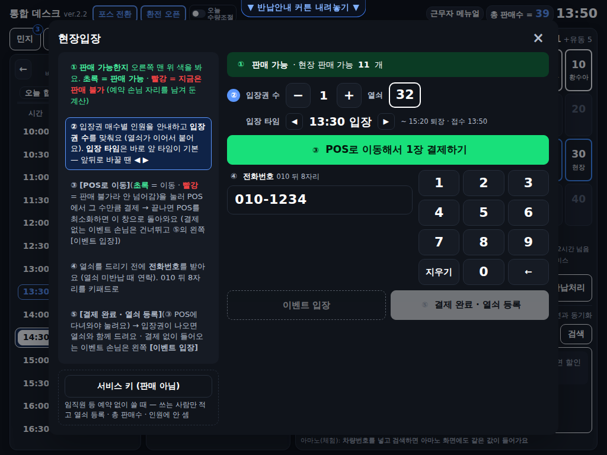
임직원 등이 예약 없이 열쇠를 쓸 때는 왼쪽 아래 [서비스 키 (판매 아님)] — 결제 · 입장권 없이 쓰는 사람만 적고 열쇠를 등록해요 (6장 '서비스 키').
현장 판매 가능 수가 기본 40개를 넘으면 유동 열쇠(5개)를 쓸지 물어봅니다 — 빈 좌석을 보고 정해 주세요.
"POS가 최소화돼 있는데 펼치지 못했어요"가 뜨면 작업표시줄의 OKPOS 아이콘을 직접 눌러 결제하고, 끝나면 입장 데스크 아이콘을 누르세요.
6. 열쇠 반납과 초과요금
열쇠판에서 손님 열쇠를 누르면 이용 시간 · 반납 시각이 보입니다.
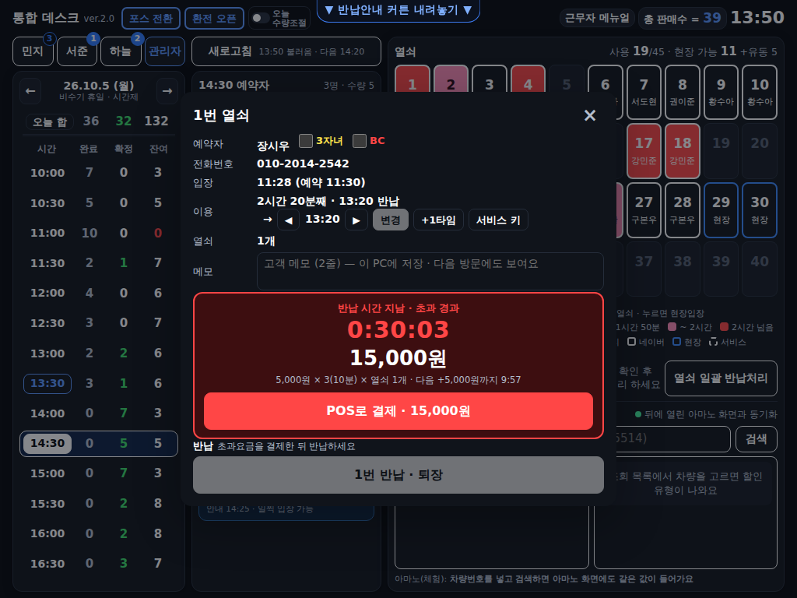
- 1시간 50분까지 페널티 없음. 1:50:01부터 시간을 세고, 2:00:00 정각에 5,000원, 그 뒤 10분이 꽉 찰 때마다 5,000원 × 열쇠 수.
- 초과요금이 있으면 [POS로 결제] → POS에서 결제 → 돌아오면 금액이 고정되고 반납할 수 있습니다. 초과요금 영수증은 POS 영수증을 드립니다.
- 열쇠가 여러 개면 [17번만]처럼 하나씩, 또는 [모두 반납].
- 무제한인 날 · 시간(비수기 평일, 18:00 입장부터)은 초과요금이 없습니다.
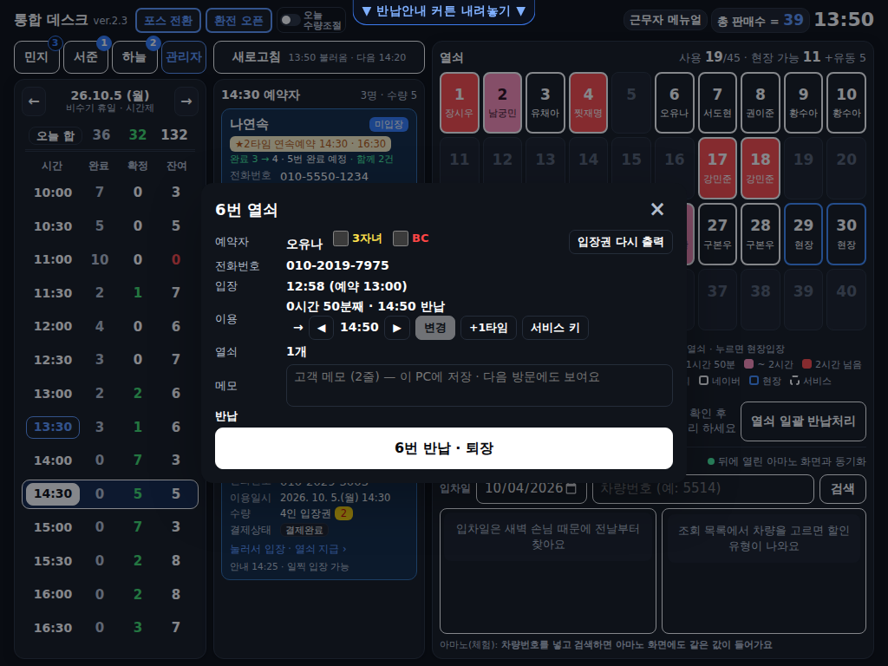
열쇠 일괄 반납처리 (영업 마감)
- 열쇠판 아래 오른쪽 [열쇠 일괄 반납처리]를 누릅니다 (열쇠가 2개 이상 나가 있을 때만 켜짐, 평소엔 흐림).
- 열쇠를 가진 손님 목록과 열쇠 번호가 나옵니다. 초과요금이 남은 손님이 있으면 빨간 칸에 이름 · 금액이 나옵니다 → 결제했는지 꼭 확인하세요.
- [모두 반납 (n명 · n개)] → 모든 열쇠가 빈 열쇠로 돌아가고 손님은 퇴장 처리됩니다.
모든 키 반납 확인 후 한번에 종료 처리 하세요 (버튼 옆 경고). 열쇠가 실제로 다 돌아왔는지 보지 않고 누르면, 손님이 가져간 열쇠를 마지막에 누가 썼는지 알기 어렵습니다. 손님이 적은 날은 반납된 앞번호 열쇠를 계속 돌려 쓰니 더 조심하세요.
반납 시각 바꾸기 · +1타임 (열쇠 창)
- 열쇠를 누르면 나오는 창의 이용 … 반납 밑 → ◀ 시간 ▶ [변경]: 반납 시각만 10분씩 바꿉니다 (판매수 · 인원 그대로).
- [+1타임]: 손님이 입장권을 더 사서 이어 놀 때 (현장 손님이 다시 사거나 네이버로 이어 예약했는데 알림이 안 뜬 경우 등). 반납이 1시간 50분(1타임) 늘고 (예: 16:50 → 18:40), 입장권을 열쇠 수만큼 더 판 것으로 판매수에 들어갑니다. 결제는 POS에서.
- 무제한 손님(골든벨 뒤 · 18:00 이후 입장 · 무제한인 날)은 바꿀 반납 시각이 없어 이 버튼들이 잠겨 있고, 밑에 까닭이 나옵니다 ([서비스 키]는 그대로 쓸 수 있어요).
서비스 키 (판매 아닌 열쇠)
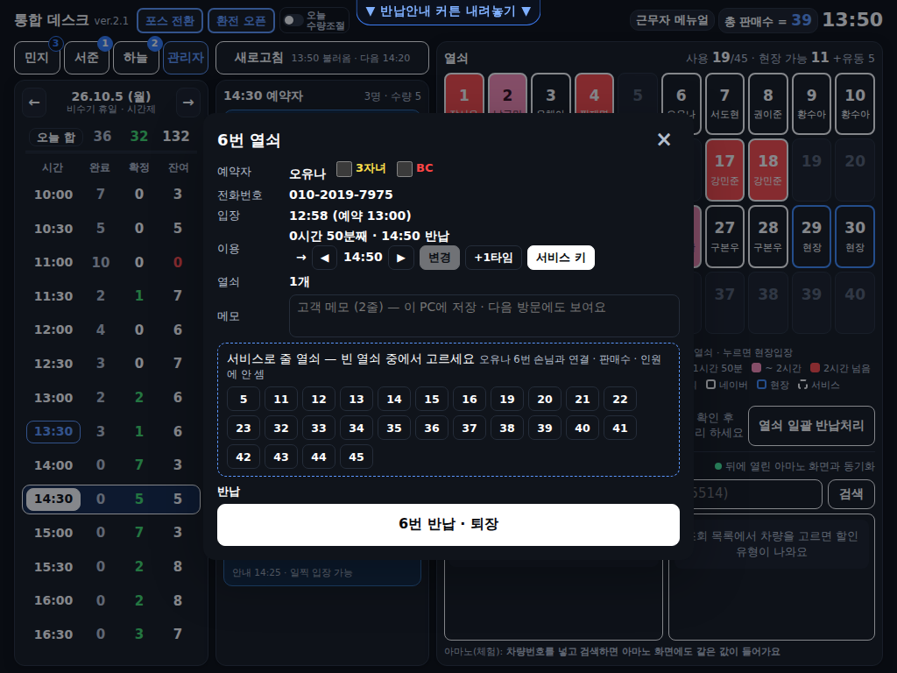
- 손님에게 열쇠를 하나 더 서비스로 줄 때: 그 손님 열쇠를 눌러 [+1타임] 오른쪽 [서비스 키] → 빈 열쇠 번호가 나오면 줄 번호를 누릅니다. 그 열쇠는 이 손님과 연결된 서비스 키가 돼요.
- 열쇠판에는 점선 테두리에 번호 아래 연결된 사람 이름(네이버 손님 이름 · '현장' · 직원은 적은 이름)이 보여요. 서비스 키를 누르면 수령인 줄에 "10번 김채원님에게 추가 서비스 지급된 열쇠"(현장 손님은 "현장 (전화번호)님께 …")가 나와요 — 원래 손님이 먼저 반납 · 퇴장해도 그대로 남아요.
- 반납은 따로: 원래 손님의 [모두 반납]에는 서비스 키가 섞이지 않아요. 서비스 키는 그 열쇠를 눌러 따로 반납해요 (반납 시각 · 색 · 일괄 반납은 다른 열쇠와 같고, 초과요금은 없어요).
- 열쇠를 잘못 줬을 때 번호를 옮기는 데도 써요: 맞는 번호를 서비스 키로 주고 → 잘못 준 열쇠를 반납.
- 임직원 등 예약 없이 쓸 때: 빈 열쇠 → 현장입장 창 왼쪽 아래 [서비스 키 (판매 아님)] → 열쇠 수 · 입장 타임 → 쓰는 사람 이름(예: 홍길동 매니저)이나 전화번호 → [서비스 키 등록 (판매 아님)]. 결제 · 입장권 · 설문은 없어요. 돌아가려면 [← 판매로 돌아가기].
- 서비스 키는 총 판매수 · 네이버/현장 인원 · 수량 자동조절에 들어가지 않아요. 입장권 목록에는 '서비스 키 · 이름 n번' 줄로 남아(합계 제외) 나중에 누가 가져갔는지 찾을 수 있어요.
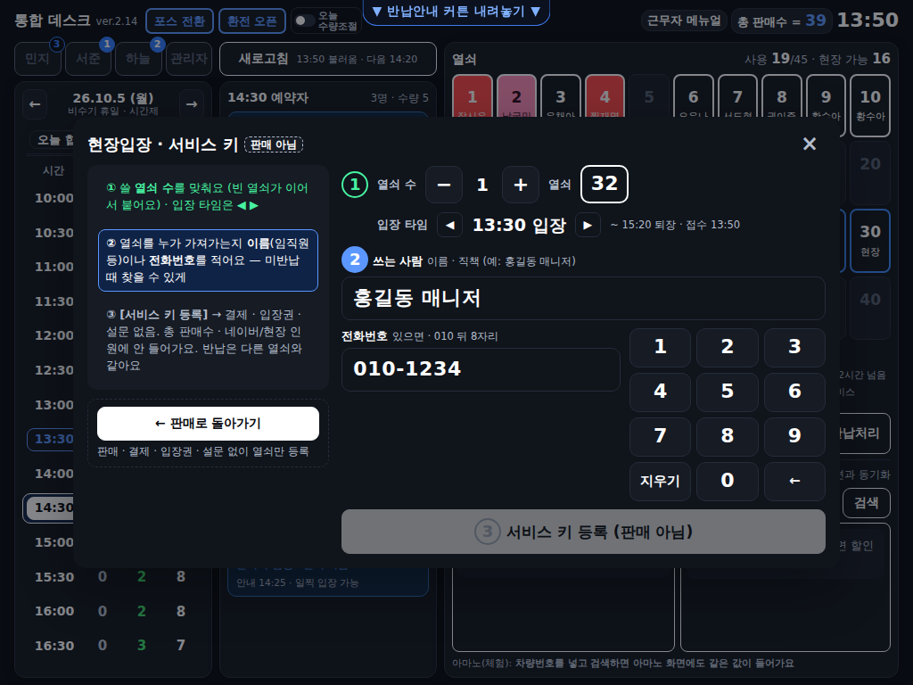
설문조사 (신규 손님 · 운영 설정 → 기타)
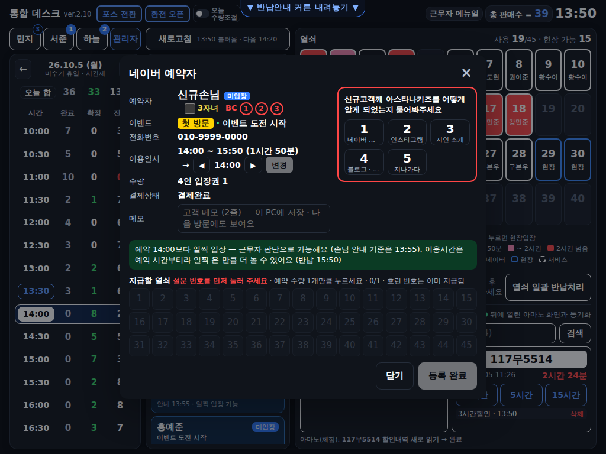
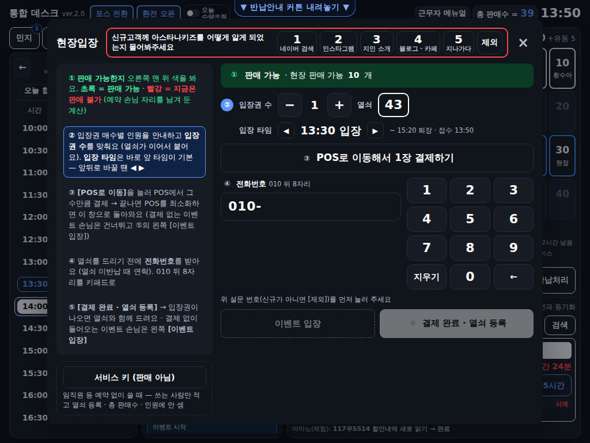
- 설문 기간에 신규 손님(네이버 첫 예약)을 입장 처리하면 예약자 창 오른쪽에 "신규고객께 아스타나키즈를 어떻게 알게 되었는지 물어봐주세요"와 번호 버튼이 나와요. 현장 안내문을 보여 드리고 손님이 "N번이요" 하면 그 번호를 먼저 누릅니다. 번호를 눌러야 열쇠를 고르고 [등록 완료]를 할 수 있어요.
- 운영 설정 → 기타 → 설문조사의 설문조사 켜짐/꺼짐 스위치로 설문을 잠깐 멈출 수 있어요. 끄면 예약자 · 현장입장 창에 번호가 안 나오고 예전처럼 바로 입장해요 (정해 둔 내용 · 누적은 그대로).
- 현장구매자도 대상이면 현장입장 창 맨 위에 같은 안내와 번호, [제외]가 나와요. 신규 손님이면 번호, 전에 와 본 손님이면 [제외]를 누른 뒤 [결제 완료 · 열쇠 등록].
- 예약 없이 이벤트로 무료로 들어온 손님처럼 위 창이 안 뜨는 손님은, 운영 설정 → 기타에서 그 번호 옆 [+]를 눌러 1건 더해요 ("오늘 2 (직접 +1)"). 잘못 눌렀으면 옆의 [−]로 되돌려요.
- 기간 · 대상 · 선택지 내용 · 보고앱 보내기(매일 20:00)는 관리자가 운영 설정 → 기타에서 정해요. 번호별 오늘 · 누적 수도 거기서 봐요. 보고 열쇠(보고 앱 주소 …/b/{열쇠}/ 의 열쇠)를 한 번 넣어 두면 매일 20:00 보고 앱 첫 화면 '설문조사'에 바로 올라가요 — 열쇠는 가려서 보이고 이 PC에만 저장돼요. 설정 화면 '마지막:'에 '보고함에 보냄'이 보이면 된 거예요 (실패면 10분 뒤 저절로 다시).
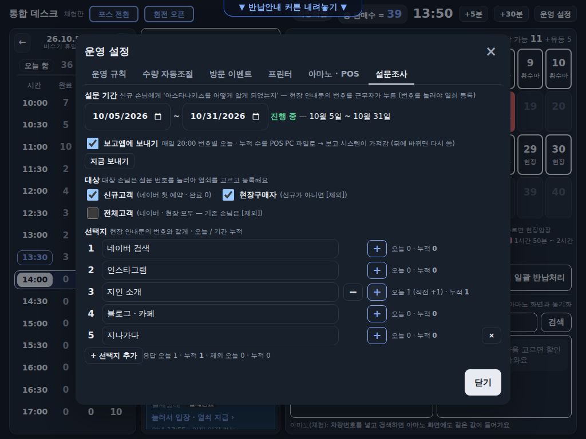
키즈 실시간 (총괄 관리자 폰 · 운영 설정 → 기타 → 보고 앱)
- 보고 열쇠 밑 폰 실시간 현황 켜짐이면 데스크가 1분마다 · 바뀌면 바로 지금 현황(네이버 완료 · 미입장 · 잔여, 오늘 입장 수, 입장권 장수 · 초과요금, 열쇠 45칸과 열쇠를 가진 손님 이름 · 전화)을 클라우드에 올려요. 설정 화면에 '마지막: 14:05:12 보냄'이 보이면 된 거예요.
- 총괄 관리자는 보고 앱 첫 화면 '입장권 판매 총 수량'을 누르면 '키즈 실시간'에서 봐요 (아래로 당기면 새로고침). 열쇠 번호를 누르면 손님 전화번호가 나와 미반납 때 바로 연락해요.
- 데스크 PC가 꺼지거나 인터넷이 끊기면 보고 앱에 "통합데스크 소식이 n분째 없어요"가 떠요. 끄려면 스위치를 [꺼짐]으로.
재방문 간격 (보고 앱 '네이버 판매 수' 맨 위 · 운영 설정 → 기타 → 보고 앱)
- 네이버 손님이 며칠 만에 다시 오는지를 보고 앱 '네이버판매' → '네이버 판매 수' 맨 위에 보여 줘요 (지난 30일 한 줄 + 왼쪽 과거 4/1 ~ 10/25 · 오른쪽 이벤트 기간, 걸린 일수 많은 순 7개). 데스크가 매일 20:00 같은 보고 열쇠로 올려요.
- 입장 처리할 때마다 그날 이용완료 손님이 이 PC에만 기록돼요 (이름 · 전화번호 없이 알아볼 수 없는 값으로).
- 데스크를 쓰기 전(4/1 ~) 기록은 매일 20:00 보낸 뒤 저절로 네이버 예약현황을 어제부터 하루씩 거꾸로 읽어요. 처음엔 몇 시간 걸릴 수 있고, POS를 끄면 다음 날 20:00에 이어서 읽어요. 다 읽으면 바로 보고 앱으로 다시 보내요.
- 지금 바로 읽으려면 설정의 '재방문 간격' [지난 방문 기록 읽기] — 영업 중에는 한 번 더 눌러야 시작하고, [멈춤] 뒤 다시 누르면 이어서 읽어요.
골든벨 (오후 · 손님이 적을 때)
- 1시간 50분 제한이 있는 날 16:00 이후 안에 있는 열쇠 20개 이하 · 남은 예약 5장 이하가 둘 다 되면 데스크에 골든벨 알림창이 뜹니다: "골든벨 울려주세요~!! 지금 시간부터 모든 고객 시간제한 없는 무제한 이용임을 알려주세요~~!!" → 골든벨을 울리고 안내한 뒤 [확인].
- 그때부터 그날은 모든 손님 무제한입니다 (지금 열쇠와 앞으로 들어오는 손님 모두). 열쇠 색(분홍 · 빨강) · 초과요금이 없어지고, 날짜 밑에 '골든벨 무제한 16:02~'가 보입니다.
없는 열쇠 찾기 (다음날 아침 등)
- 맨 위 [총 판매수 = n] → 입장권 목록 → 열쇠 번호로 찾기에서 없는 열쇠 번호를 고릅니다.
- 최근 2주 동안 그 열쇠를 가져간 사람이 최근 순으로 나옵니다. 맨 위가 마지막으로 쓴 사람입니다 (일괄 표시 = 일괄 반납으로 돌려받아 실제 반납을 확인하지 않은 열쇠).
- 줄을 누르면 고객 카드: 전화번호 · 날짜 · 입장 · 열쇠 · 반납 시각 · 예약번호(현장구매는 POS 번호) → 연락합니다. 현장구매자도 전화번호가 남습니다.
- 입장 기록은 이 PC에 날짜별로 남아 지우지 않습니다. 목록에서는 오늘 포함 2주(◀ ▶)까지 봅니다.
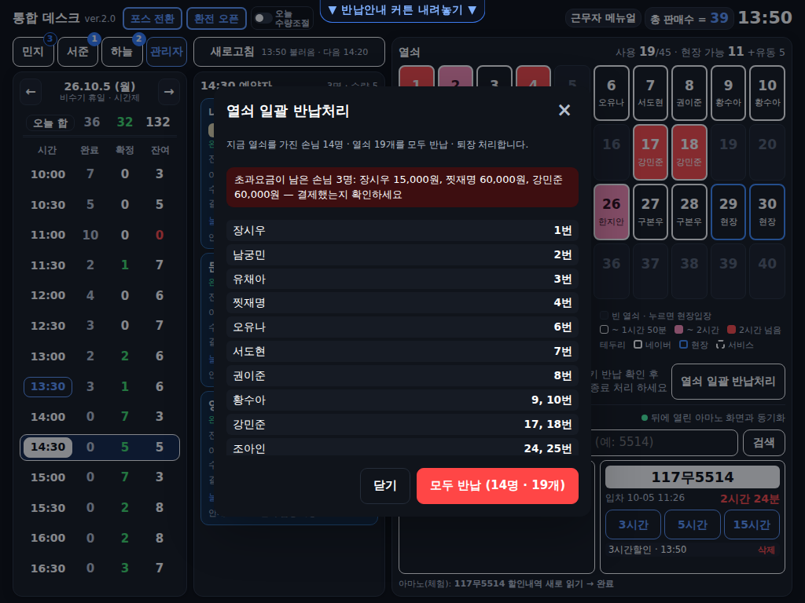
7. 주차등록 (아마노)
- 입차일은 기본 전날입니다 (새벽에 들어온 차 때문). 차량번호 칸을 누르면 그 위에 숫자패드가 뜹니다 (아래 할인정보는 가리지 않음) → 뒤 4자리 등을 누르고 패드의 [검색] (← 한 자리 지우기 · 지우기 전부). 다른 곳을 누르면 패드가 닫힙니다.
- 왼쪽 목록에서 차를 고르면 오른쪽에 입차 시각 · 주차 시간 · 할인 버튼이 나옵니다.
- [3시간] [5시간] [15시간] 중 하나 → 할인내역에 바로 "3시간할인 · 등록 중…"이 뜨고 차량번호 칸이 비워집니다. 기다리지 말고 다음 차를 바로 검색하세요 (숫자패드가 바로 다시 뜸).
- 아마노 등록은 뒤에서 차례대로 합니다 ("등록되었습니다" 확인도 자동). 끝나면 아래에 "117무5514 3시간할인 등록됨"이 잠깐 뜨고 할인내역이 시각으로 바뀝니다.
- 잘못 넣었으면 할인내역의 [삭제] (우리 계정으로 넣은 것만 지울 수 있음).
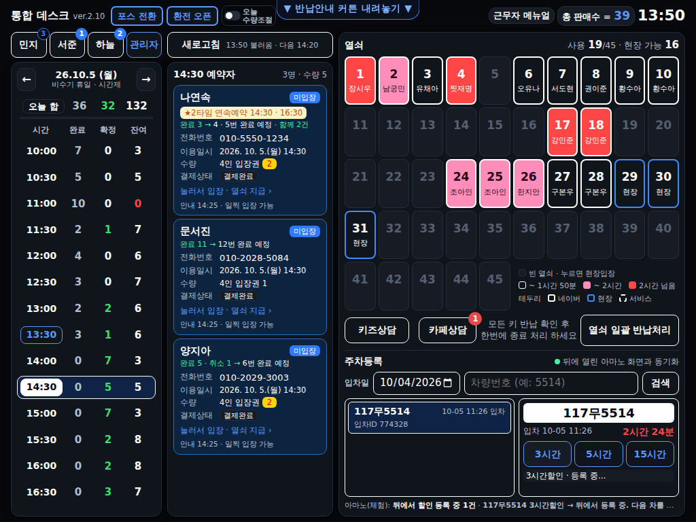
- 검색 · 차 고르기는 아마노 화면이 바뀔 때까지 기다렸다 읽어서 조금 걸립니다. 맨 아래 줄에 진행 상황과 "뒤에서 할인 등록 중 n건"이 보입니다.
- 같은 차에 같은 할인이 등록 중일 때 또 누르면 "이미 등록 중"이라고 막습니다.
맨 아래 줄에 빨간 "⚠ 할인 등록 실패 차번호 할인 — 까닭"이 뜨면 → [다시]를 누릅니다. 아마노에서 직접 넣었다면 [지우기]. 프로그램이 꺼져도 남은 등록은 다음에 켤 때 이어서 합니다.
8. 예약 이용완료 횟수와 사은권
- 횟수는 네이버 기록 그대로입니다: 같은 네이버 아이디로 이용완료된 예약 건수. 손님이 네이버 앱의 예약 내역에서 직접 확인할 수 있어요.
- 예약 1번 = 1번 — 한 번에 3장 예약해도 1번, 1장씩 3번 예약하면 3번. 장수 · 현장구매 · 다른 아이디는 세지 않습니다. 손님께는 '방문'이 아니라 '네이버 예약 이용완료'로 안내해 주세요.
- 카드: 입장 전 = "완료 8 · 취소 2 → 9번 완료 예정", 입장 후 = "9번째 예약완료".
- 같은 날 여러 건 예약한 손님은 입장 전 카드에도 그날 함께 · 먼저 이용완료될 예약까지 세어 보여 줘요: 같은 시간 나눠 예약 · 연속예약의 첫 카드 = "완료 8 → 9 · 10번 완료 예정 · 함께 2건 2만원 사은권 증정", 둘째 카드 = "→ 10번 완료 예정", 따로 입장할 앞 예약이 있으면 "(오늘 앞 예약 1건 포함)". 앞 예약 시간(1시간 50분)이 다 지나도록 안 온 예약은 세지 않아요.
- 재방문 이벤트를 한 뒤에는 이벤트 기간에 이용완료한 수를 뺀 수가 마일리지예요 (아래 '재방문 이벤트' · 카드에 "완료 7 → 8번 완료 예정 (네이버 완료 10 − 이벤트 3)").
- 입장권: "네이버 예약 9번 이용완료", 아래에 "10번마다 2만원 사은권을 드려요" · "[예약 1번 = 예약시 구매수량 무관/예약 수]".
- 10 · 20 · 30…번째이면 카드와 알림에 2만원 사은권 증정 → 사은권(명함식 카드)을 드립니다.
- 같은 시간에 나눠 예약한 손님(같은 이름 · 전화번호, 예: 15:00 1장 + 1장): 카드에 "같은 시간 예약 1/2 · 함께 입장". 첫 카드에서 한 번에 입장 처리하고 열쇠는 합친 장수만큼 고릅니다. 네이버 예약 2건 모두 이용완료되고, 입장권에는 함께 완료한 뒤의 횟수(예: 10번)가 찍혀요 — 그 사이에 10번째가 있으면 사은권.
재방문 이벤트 (운영 설정 → 프린트물 설정 → 재방문 이벤트 · 쿠폰, 관리자)
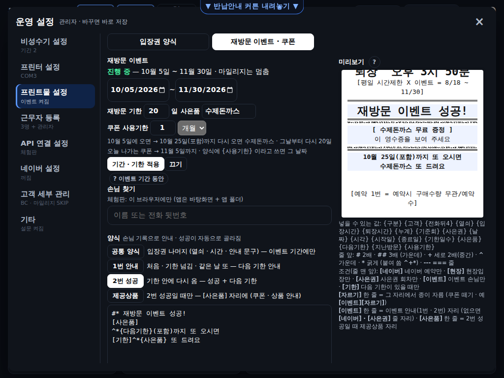
- 시작일 ~ 종료일, 재방문 기한(기본 20일), 사은품(기본 수제돈까스)을 넣고 [적용 (켜기)]. 시작일 전에는 원래대로, 시작일부터 종료일까지가 이벤트 기간입니다.
- 이벤트 기간에는 마일리지가 멈춥니다: 입장권의 "네이버 예약 N번 이용완료" · "10번마다 사은권" 줄 대신 이벤트 안내가 찍혀요. 카드에는 횟수 대신 이벤트 기간에 처음 온 손님은 "이벤트 도전 시작"(아스타나키즈가 처음인 손님은 노랑 "첫 방문"이 앞에 — 설문부터), 기한 안에 다시 온 손님은 옅은 황토색 네모에 "이벤트 도전 성공"이 나와요 (입장하면 알림에 "수제돈까스 드리세요"). 손님께는 "이벤트 기간에는 마일리지가 멈춰요"라고 안내해 주세요. (네이버 숫자는 계속 올라가요)
- 영수증은 두 가지예요 — 손님마다 방문 기록으로 자동으로 골라요:
- 1번 안내: 기간 중 처음 왔거나, 지난 방문 뒤 20일을 넘겨 왔을 때 → "○월 ○일(포함)까지 다시 오시면 수제돈까스 무료 증정!" (오늘 + 20일)
- 2번 성공: 지난 방문 뒤 20일 안(그날 포함)에 다시 왔을 때 → "[ 수제돈까스 무료 증정 ] 이 영수증을 보여 주세요" + 다음 기한(오늘 + 20일). 입장 알림에 "이벤트 성공 — 수제돈까스 드리세요". 다음에도 기한 안에 오면 또 성공 — 계속 반복돼요.
- 기한은 날짜로 찍히고(방문한 날 + 20일, 그날 포함) 종료일을 넘지 않아요. 종료일에 온 손님은 다음 기한 줄 없이 나가요. 이벤트는 방문한 날 기준이에요: 그날 몇 장 · 몇 건(나눠 한 예약 · 연속예약 · 입장 뒤 추가 예약)이든, 영수증을 받은 뒤 같은 날 따로 다시 예약해 들어와도 그날 방문은 한 번 → 카드에 "오늘 이미 방문", 사은품 없이 1번 안내(기한 그대로). 재방문 성공은 다음 날 이후 다시 올 때만이에요.
- 이벤트가 끝나면(종료일 다음 날부터 · 또는 [끄기]) 마일리지가 다시 셉니다: 네이버 완료 − 이벤트 기간 이용완료 수. 카드는 이벤트 전과 같은 모양으로 "완료 7 → 8번 완료 예정"(옆에 작게 "네이버 완료 10 − 이벤트 3"), 입장권 누계와 10번째 사은권도 뺀 수로 자동이에요. 이벤트 기간에 안 온 손님은 네이버 숫자 그대로.
예) 10/26 ~ 2/28 이벤트 · 홍길동 이벤트 전 완료 5 → 기간에 6번 더(네이버 완료 11) → 3월에 오면 "완료 5 → 6번 완료 예정" · 김철수 이벤트 전 완료 3 · 기간에 안 옴 → "완료 3 → 4번 완료 예정"
- 시작일을 오늘로 낮에 켜면, 켜기 전에 이미 입장한 손님(마일리지 입장권을 받음)은 이벤트 방문으로 치지 않아요.
- 쿠폰 사용기한: 방문 이벤트 탭 쿠폰 사용기한 [1][개월](또는 일)을 정해 두고, 제공상품 양식에 {사용기한}이라고 쓰면 쿠폰이 나가는 날 기준으로 날짜가 찍혀요. 예)
^*사용기한: {사용기한}까지 → 10월 19일에 나간 쿠폰은 "사용기한: 11월 19일까지". 해가 바뀌면 "2027년 1월 18일"처럼 해까지 · 칸을 비우면 그 줄은 안 나와요.
- 쿠폰 보안 무늬: 성공 입장권의 제공상품(쿠폰)은 위 · 아래에 가로 두 줄과 아주 작은 글씨 띠(ASTANAKIDS·날짜)가 붙어 찍혀요. 가운데 글은 제공상품 양식에 쓴 그대로예요 (POS 프린터 글꼴로는 이렇게 작은 글씨를 못 찍어 가짜와 구별 · 날짜가 그날). 쿠폰이 든 입장권도 2~3초면 나와요. 프린터가 그림을 못 찍으면 방문 이벤트 탭 [쿠폰 보안 무늬]를 끄세요.
- 양식은 공통 양식 · 1번 안내 · 2번 성공 · 제공상품 네 개예요. 공통 양식에서 이벤트 안내를 넣고 싶은 자리에 [이벤트] 한 줄, 쿠폰 · 상품 안내를 넣고 싶은 자리에 [사은품] 한 줄을 쓰면 — [이벤트] 자리에는 1번 안내(20일 안에 다시 왔으면 2번 성공)가, [사은품] 자리에는 2번 성공일 때만 제공상품에 쓴 내용이 찍혀요. 제공상품에 [자르기]를 같이 쓰면 쿠폰처럼 잘려 나와요.
- 양식 번호를 누르면 그 문구를 고쳐 쓰고, 오른쪽 미리보기로 확인 · [n번으로 시험 출력]. 쓰는 법(값 · 줄 앞 표시 · 조건)은 입장권 양식과 똑같아요 (설명은 미리보기 밑). [기한]을 줄 앞에 쓰면 다음 기한이 있을 때만 찍혀요.
- [공통 양식]: 입장권의 나머지(열쇠 · 시간 · 안내 문구)도 여기서 고칩니다. 이벤트 기간에만 모든 입장권이 이 양식으로 나가고, 끝나거나 끄면 프린터 탭의 원래 양식으로 돌아가요. [원래 양식으로]로 되돌려요.
- 손님 찾기: 이름 또는 전화 뒷번호를 넣으면 마일리지(네이버 완료 − 이벤트) · 이벤트 n회 · 성공 n번 · 다음 기한 · 방문 날짜가 나와요 — 손님이 "언제까지 와야 해요?" · "마일리지 몇 번이에요?" 물으면 여기서 봅니다. 전체 목록은 보이지 않아요.
- 기록은 POS PC 바탕화면 '아스타나키즈-이벤트' 폴더와 앱 폴더 두 곳에 같이 저장됩니다. 이벤트가 끝난 뒤 마일리지 계산에도 쓰니 이 폴더는 지우거나 옮기지 마세요. 바탕화면의 이벤트참여자_시작일.csv는 엑셀로 열어 보는 정리본(손님마다 한 줄)이에요. 설정 화면 [바탕화면 폴더]로 열 수 있어요.
- 현장입장 입장권은 그대로입니다(네이버 예약 마일리지 안내).
9. 입장권 출력 (프린터)
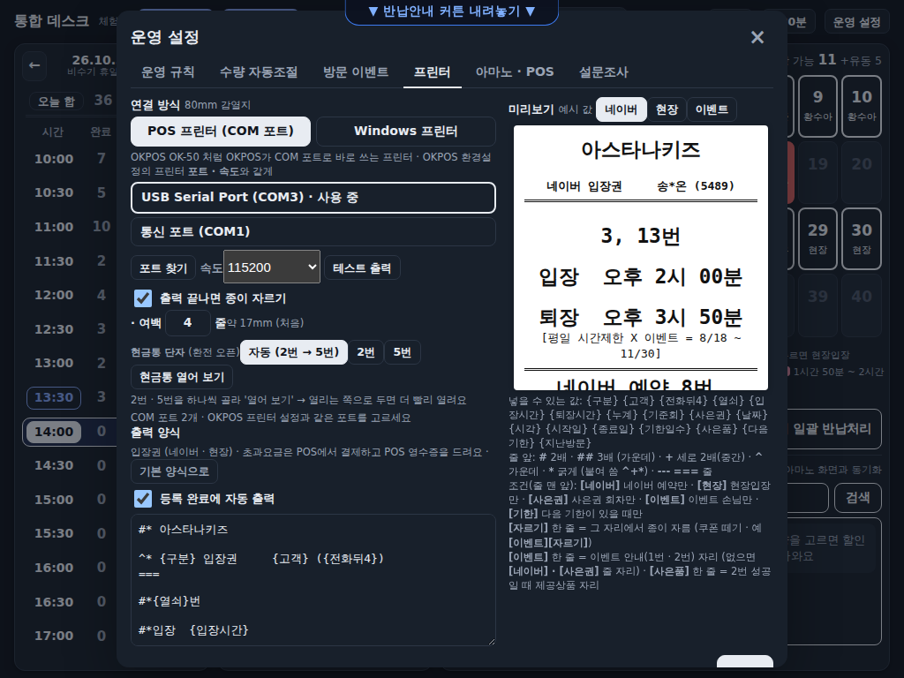
- 운영 설정 → 프린터 설정 → 연결 방식
- POS 프린터 (COM 포트): OKPOS OK-50처럼 OKPOS가 COM 포트로 바로 쓰는 프린터 (우리 매장). [포트 찾기] → OKPOS 환경설정의 프린터와 같은 포트 · 속도를 고릅니다 (예: COM3 · 115200).
- Windows 프린터: Windows '프린터 및 스캐너'에 등록된 프린터. [프린터 찾기] → 목록에서 고름. 안 나오면 [인쇄 창으로 출력]으로 시험.
- [테스트 출력] → 종이가 나오고 잘리는지 확인. 버튼 아래에 결과가 나옵니다. 글자가 깨져 나오면 속도를 바꿔 봅니다.
- 출력 끝나면 종이 자르기: 프린터가 이미 스스로 자르면 꺼 주세요 (두 번 잘림).
- 자르기 전 여백(처음 4줄 ≈ 17mm): 다 찍은 뒤 종이를 올리는 양 — 줄이면 영수증 아래 빈칸이 줄어요. 너무 줄이면 마지막 줄이 잘리니 테스트 출력으로 맞춰요. 위 빈칸은 프린터 안 칼과 인쇄 위치 사이 거리라 줄일 수 없어요.
- 감열지가 다 돼 입장권이 중간에 끊겼으면: 종이를 갈고 열쇠판에서 그 손님 열쇠 번호를 눌러 열쇠 창 오른쪽 위 [입장권 다시 출력]. 네이버 · 현장 · 이벤트 손님 모두 (서비스 키는 입장권이 없음). 자동 출력을 꺼 둬도 누르면 나옵니다.
- 입장권은 등록 완료 때 자동 출력됩니다: 네이버 · 현장 입장권 / 고객명(가운데 가림, 현장은 빈칸) · 열쇠 · 입장시간 · 퇴장시간 / 네이버 손님은 이용완료 누계, 현장 손님은 네이버 예약 안내 / 이용수칙.
- 양식 글은 운영 설정 → 프린트물 설정 → 입장권 양식에서 고칩니다. [네이버 예약] · [현장 입장] 중 하나를 누르면 그 양식만 나오고 오른쪽 미리보기로 확인합니다 (현장 결제 · 이벤트 입장 · 서비스 키는 현장 입장 양식). [기본 양식으로]는 고른 쪽만 되돌립니다.
| 줄 앞에 쓰는 표시 | 뜻 |
|---|
| # · ## · ### | 글자 2배 · 3배 · 4배 (가운데) |
| + | 세로 2배 — 기본 글씨와 2배 사이 중간 크기 (폭은 그대로라 한 줄 42칸 그대로). 영수증 프린터는 정수 배만 돼서 1.5배는 없어요. 예) ^+* 가운데 · 세로 2배 · 굵게 |
| ^ · * | 가운데 · 굵게. 붙여 씀: #* 2배 굵게, ^* 가운데 굵게 |
| --- · === | 구분선 · 이중선 (한 줄 42칸) |
| [네이버] · [현장] · [사은권] · [이벤트] · [기한] | 그 줄을 네이버 예약(마일리지 줄 — 누계를 알 때만) · 현장입장 · 사은권 받는 회차 · 이벤트 손님 · 이벤트 다음 기한이 있을 때에만 출력 (입장권 양식은 네이버 · 현장이 따로라 [현장]은 안 써도 됨) |
| [자르기] (한 줄) | 그 자리에서 종이를 자름 — 쿠폰처럼 떼어 줄 때. 예) 쿠폰 줄 위아래에 [자르기]. 조건과 같이 [이벤트][자르기] = 이벤트 손님만 자름. 미리보기에 빨간 '✂ 여기서 자름' |
| {열쇠} {입장시간} … | 손님마다 바뀌는 값 (화면 아래 목록) |
COM 포트가 목록에 없으면 프린터 USB 선과 전원을 확인하세요. Windows 프린터 방식에서 목록이 비면 Windows 설정 → 프린터 및 스캐너에 그 프린터가 있는지 봅니다.
10. 반납안내 커튼
손님에게 열쇠 반납을 안내할 때 화면 전체를 안내 그림으로 덮습니다.
- 화면 맨 위 가운데 초록 ▼ 반납안내 커튼 내려놓기 ▼ 손잡이를 아래로 끌어내립니다 (눌러도 내려옴).
- 치울 때: 아래 초록 ▲ 누르면 사라져요 ▲를 누르면 바로 사라지고, 그림 왼쪽 아래 빨간 별을 누르면 위로 빠르게 걷힙니다.
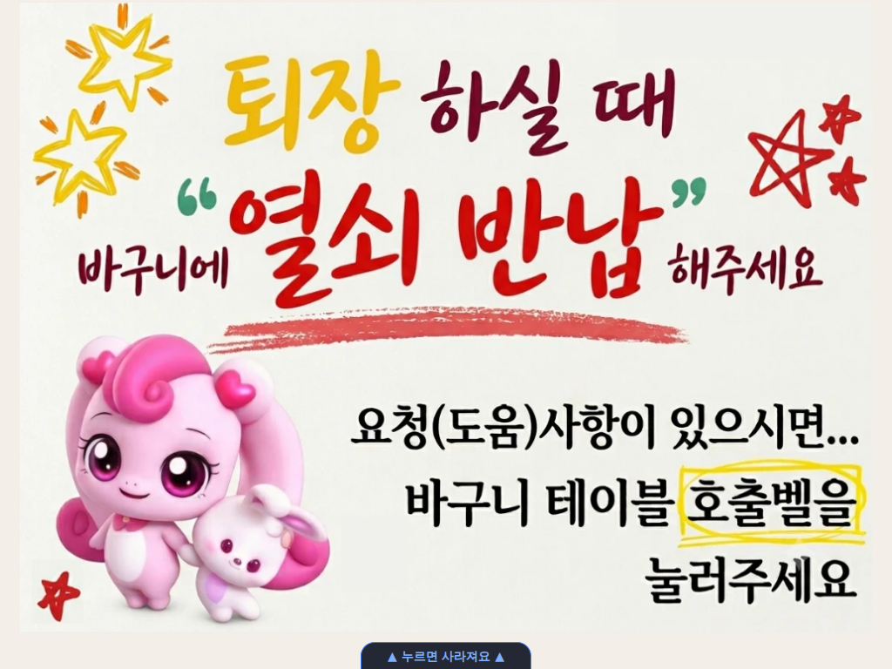
커튼이 내려와 있는 동안에도 뒤에서 네이버 · 아마노 일은 계속됩니다.
11. 문제가 생겼을 때
| 보이는 것 | 할 일 |
|---|
| 새로고침 옆 빨간 글 "네이버에 로그인해 주세요" | 운영 설정 → API 연결 설정 → 네이버 화면 보기 → 로그인('로그인 상태 유지' 체크) → 새로고침. |
| "예약현황이 '일간'이 아님" | 네이버 화면 보기 → 예약현황 왼쪽 위를 일간으로 → 새로고침. |
| "카드를 못 읽은 칸: 14:00 확정" | 그 시간 줄을 한 번 더 누릅니다. 계속되면 운영 설정 → API 연결 설정 → 네이버 화면 저장 (바탕화면 '아스타나키즈-진단' 폴더 파일을 관리자에게). |
| 빨간 글 "⚠ 네이버 이용완료 실패" · 카드에 "네이버 이용완료 대기" | 2분마다 자동으로 다시 합니다. 오래 남아 있으면 네이버 화면에서 그 손님을 직접 이용완료. |
| 맨 아래 빨간 "⚠ 할인 등록 실패" | [다시]. 계속 안 되면 [아마노 화면 보기]로 로그인 상태 확인 → [다시]. 아마노에서 직접 넣었으면 [지우기] (7장). |
| "아마노 로그인이 풀렸어요" | [아마노 화면 보기] → 로그인. 보통은 자동으로 다시 로그인합니다. |
| 입장권 출력 실패 | 운영 설정 → 프린터 설정 → 포트 · 속도 확인 → 테스트 출력 (9장). '포트를 다른 프로그램(OKPOS)이 쓰는 중'이면 POS가 그 순간 프린터를 쓰고 있던 것 — 잠시 뒤 다시 (데스크가 10초까지 기다렸다 찍음). |
| 결제하기를 눌러도 POS가 안 나옴 | "POS 창을 찾지 못함"이면 OKPOS가 켜져 있는지 확인 · 운영 설정 → API 연결 설정의 POS 창 제목 확인. "펼치지 못했어요"면 작업표시줄의 OKPOS 아이콘을 직접 누릅니다. |
| POS를 최소화해도 데스크가 안 올라옴 | 작업표시줄의 입장 데스크 아이콘을 누릅니다. 결제 완료 단계로 그대로 이어집니다. |
| 화면이 멈춘 것 같음 | 입장 데스크 창을 닫고 다시 켭니다. 열쇠 · 입장 기록은 그대로 남습니다. |
운영 설정 (관리자 — 맨 오른쪽 시계를 1.5초 안에 두 번)
- 왼쪽 메뉴 8개: 비성수기 설정(성수기 기간) · 프린터 설정 · 프린트물 설정(입장권 양식 / 재방문 이벤트 · 쿠폰) · 근무자 등록(메모장 이름 · 평일 / 주말) · API 연결 설정(아마노 · 네이버 · 톡톡 · POS) · 네이버 설정(기준 · 재고 자동 오픈 · 판매 수량 자동조절 · 입금대기 자동 취소) · 고객 세부 관리(BC 관리 · 마일리지 SKIP) · 기타(설문조사 · 보고 앱 · 재방문 간격 · 정보). 메뉴 밑 작은 글 = 지금 상태.
- 긴 설명은 [?]를 눌러야 보여요. 바꾸면 바로 저장돼요.
비성수기 설정 (성수기 기간)
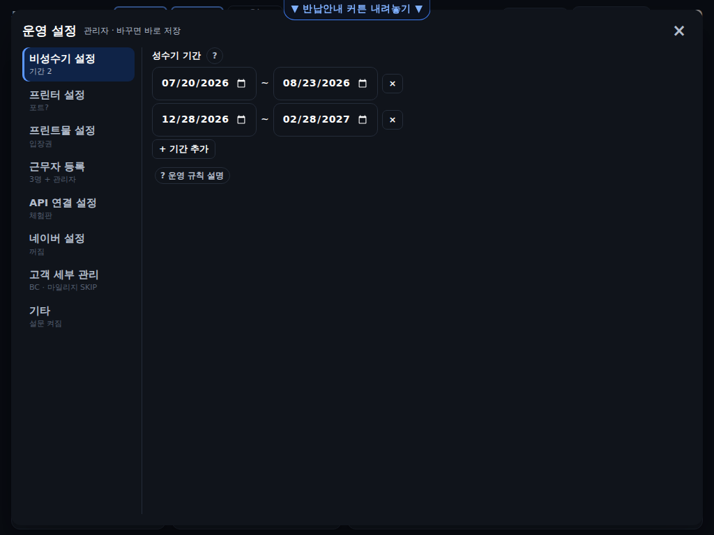
- 성수기: 평일 · 휴일 모두 17:30 입장까지 1시간 50분, 18:00 입장부터 무제한. 비수기: 평일 무제한, 휴일은 성수기와 같음.
- 성수기 기간은 한 줄에 시작 ~ 끝, [+ 기간 추가]로 늘리고 × 로 지웁니다.
네이버 재고 자동 오픈 (운영 설정 → 네이버 설정, 관리자)
- 맨 위 기준(대상 상품 · 회차당 기본 재고 10개 · 열어 둘 기간 30일)은 재고 자동 오픈과 판매 수량 자동조절이 같이 봐요.
- 켜 두면 데스크가 매일 오늘 + 30일 날짜를 네이버 예약상품 평일 무제한 / 휴일 1시간 50분 입장권과 야간자유 입장권 모두 회차마다 재고 10개로 열어요 (예약상품 → 일정/가격 → 재고수정 → 날짜 → 다음 → 모든 회차 → 10 → 저장을 대신 함). 20일에 다음 달을 따로 열지 않아도 늘 앞으로 30일이 열려 있어요.
- 때: 10:30 — 안 되면 12:00 · 16:00 · 20:20에 다시. 한 번 되면 그날은 끝이에요. 데스크(POS)를 늦게 켜면 켜자마자 한 번 해요. 설치하면 켜져 있어요. 설치한 날이나 스위치를 켤 때는 바로 하지 않고 오늘 남은 다음 때(예: 18:40에 켜면 20:20)에 처음 해요.
- 그 날짜를 확인하지 않고 바로 회차마다 10개로 넣어요 (이미 넣은 날이어도 10개로). 데스크가 꺼져 있어서 못 연 날은 다음에 이어서 열어요 (7일까지).
- [확인만 해 보기]: 재고수정 창에서 그 날짜 '모든 회차' 확인까지만 해 보고 취소해요 (바꾸지 않음). [지금 한 번 열기]: 바로 열어요 (몇 분 동안 네이버 불러오기가 조금 늦어져요). 실패하면 줄에 까닭과 다음 시각이 보여요.
네이버 판매 수량 자동조절 (운영 설정 → 네이버 설정, 관리자)
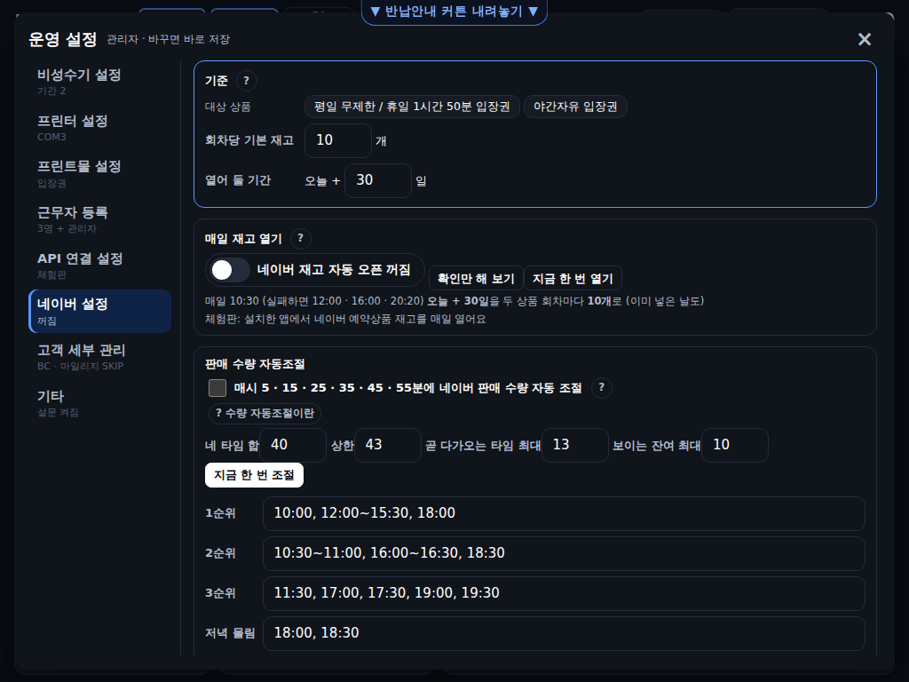
- 성수기(평일 · 휴일) · 비수기 주말 · 공휴일에만 합니다 (비수기 평일은 안 함). 비수기 평일에 사람이 몰리면 근무자가 맨 위 [오늘 수량조절] 스위치를 켜요 → 그날만 같은 방법으로 조절해요 (손님 이용은 그대로 무제한 · 계획은 손님이 1시간 50분 머문다고 보고, 1시간 50분이 지나도 있는 손님은 적어도 30분 더 있다고 봄 · 18:00 전 타임만). 스위치는 설정과 상관없이 그날만 켜고 꺼요 — 시간제인 날에도 그날만 끌 수 있어요. 끄면 멈추고(이미 바꾼 수량은 그대로), 다음 날은 기본(비수기 평일 꺼짐 · 시간제인 날은 운영 설정 그대로)으로 시작해요.
- 매시 5 · 15 · 25 · 35 · 45 · 55분에 네이버 '회차당 수량'을 봅니다. 미리 예상하지 않고 지금까지 들어온 예약만 봐요. 처음엔 모든 타임 10장 → 네 타임(2시간) 합 40.
- 곧 다가오는 타임이 매진이면 한 장 더 엽니다 (10분에 한 장 · 30분 사이 3번 · 최대 13). 그만큼 뒤 3타임 중 예약이 가장 적은 타임에서 한 장 줄여 네 타임 합은 그대로예요 (앞 타임 손님까지 넣어 40을 넘는 타임에서는 안 줄이고, 그런 타임뿐이면 안 늘려요). 늘린 자리가 안 팔리고 그 타임이 시작하면 줄였던 타임에 돌려줘요. 잔여가 남아 있으면 손대지 않아요.
- 뒤 3타임이 모두 1순위면 줄이지 않고, 그 타임 예약 중 여러 장 산 팀(같은 이름 · 전화번호는 합침)만큼 늘려요 — 2장 2건 또는 3장 1건마다 한 장. 그 뒤 3타임은 예정보다 일찍 반납한 열쇠가 생길 때까지 더 바꾸지 않아요. 뒤 3타임이 모두 매진이면 줄이지 않고 11까지만 늘려요.
- 저녁 몰림 18:00 · 18:30: 곧 다가오지 않아도 매진이면 한 장씩, 13 넘게 늘려요. 17:00 ~ 18:30 · 18:00 ~ 19:30 처럼 네 타임 합이 40을 넘지 않게 3순위 타임(17:00 · 17:30 · 19:00 · 19:30)에서 예약이 적은 순으로 줄여요.
- 순위(기본): 1순위 10:00 · 12:00 ~ 15:30 · 18:00 / 2순위 10:30 ~ 11:00 · 16:00 ~ 16:30 · 18:30 / 3순위 11:30 · 17:00 · 17:30 · 19:00 · 19:30. 운영 설정 → 네이버 설정 '1순위 · 2순위 · 3순위 · 저녁 몰림' 칸에서 바꿔요 (쉼표로 나눔 · 12:00~15:30 = 그 사이 모두).
- 늘리기 전에 그 손님이 있는 동안 열쇠 45개가 모자라지 않는지 봐요 (안에 있는 손님 · 아직 안 온 예약 · 열린 잔여 · 현장 손님).
- 현장 판매는 같은 셈으로 초록 = 그 수만큼 판매 · 빨강 = 판매 안 함. 근무자가 빈 좌석을 보고 고르지 않아요 (열쇠 45개 안에서 · 네이버 남은 수량은 다 팔린다고 봄).
- 고객에게 보이는 잔여는 10장을 넘지 않게 합니다 (안내 '최대 10팀'과 맞게 · 예약이 늘수록 줄어듦).
- 이용완료할 손님이 있으면 수량 조절은 기다려요 (네이버 창은 한 번에 한 일만 해요).
- [매시 5 · 15 · … 자동 조절]을 체크하면 켜집니다. [지금 한 번 조절]로 바로 해 볼 수 있고, 표에 순위 · 계획 · 까닭 · 네 타임 합이 나와요. 기록에 바꾼 내용 · 실패(빨강)가 남고, 3번 연속 실패하면 30분 쉽니다.
- 한 칸 시험: 날짜 · 타임 · 수량을 골라 [네이버에 넣기] → 네이버 예약현황에서 그 칸 수량이 바뀌었는지 확인 (손님 영향이 없는 먼 날짜로, 끝나면 원래 수량으로 되돌림). 영업 전에 [지금 한 번 조절]을 누르면 그날 첫 타임부터 봐요.
12. 메모장 · 근무자 메뉴얼 (화면 안)
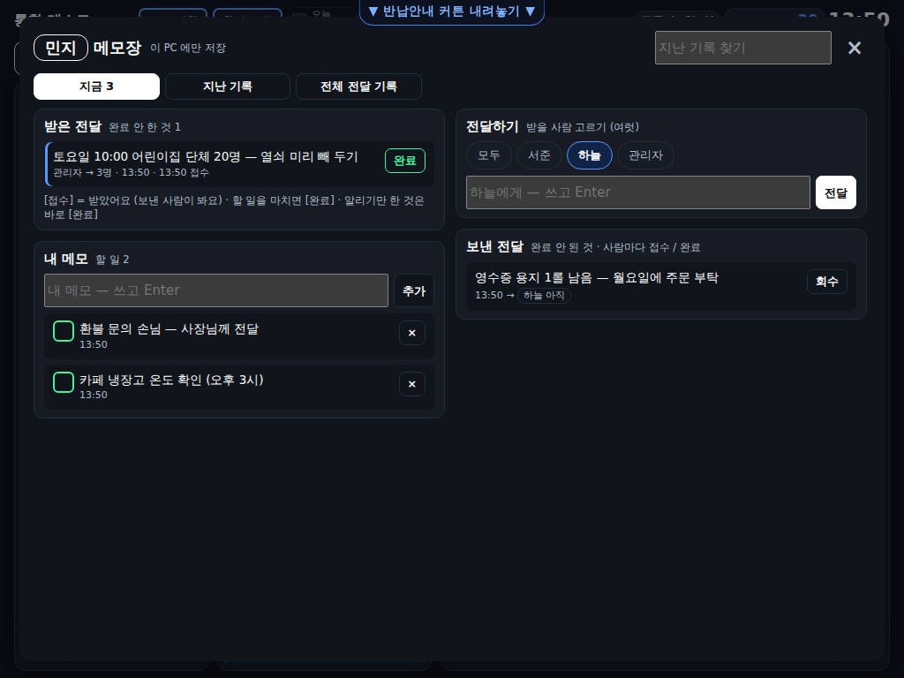
메모장 — 시간표 위 메모 상자 (근무자마다 하나 + 관리자)
- 평일 1명 · 주말 2명이 돌아가며 PC 앞에 있으니 사람마다 메모장이 있어요. 내 이름 상자를 누르면 내 메모장. 상자 숫자 = 아직 완료 안 한 것(내 메모 + 받은 전달) — 내가 쓴 것이 없어도 받은 전달이 있으면 보여요. 숫자가 칠해져 있으면 아직 접수 안 한 새 전달.
- 받은 전달: 읽고 [접수](받았어요 — 보낸 사람이 봐요) → 할 일을 마치면 [완료]. 알리기만 한 것은 바로 [완료].
- 내 메모: 쓰고 Enter → 할 일. 마치면 ☐를 눌러 완료(지난 기록에 남음 · 되돌리기 가능) · 잘못 쓴 것은 ×.
- 전달하기: 받을 사람을 고르고(여럿 · [모두]) 쓰고 Enter. 보낸 전달에 사람마다 아직 · 접수 · 완료가 보여요 (아무도 접수 안 했으면 [회수]).
- 관리자 상자: 관리자가 쓰면 처음부터 모든 근무자에게 같은 내용이 가요 (받을 사람을 빼거나 고를 수도 있음).
- 지난 기록(내가 완료한 것) · 전체 전달 기록(누가 누구에게 · 모두 같이 봄) · 맨 위 지난 기록 찾기.
- 메모는 이 PC에만 저장돼요. 상자 글(이름 · 별칭 · 성)과 근무자 추가는 관리자가 운영 설정 → 근무자 등록에서 — 근무자를 더하면 상자가 하나 늘어요. 손님에 대한 메모는 예약자 창의 '메모' 칸에 (3장).
근무자 메뉴얼 — 맨 위 [근무자 메뉴얼]
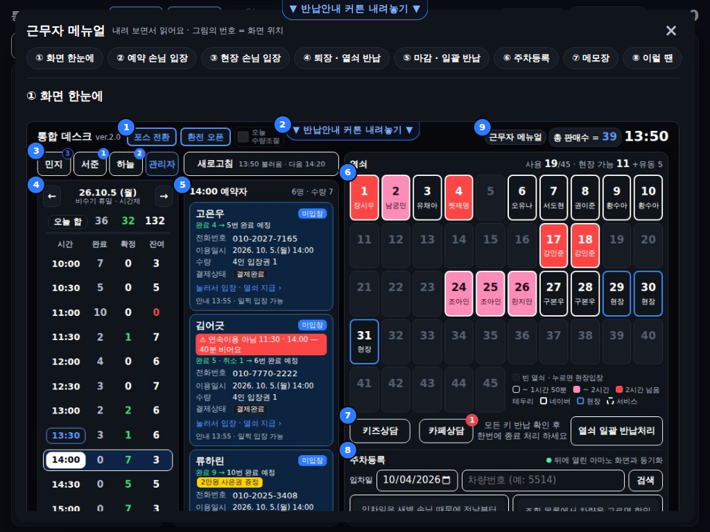
- 화면 안에서 바로 보는 짧은 메뉴얼이에요. 내려 보면서 읽고, 위 차례(① 화면 한눈에 · ② 예약 손님 입장 · ③ 현장 손님 입장 · ④ 퇴장 · 열쇠 반납 · ⑤ 마감 · 일괄 반납 · ⑥ 주차등록 · ⑦ 메모장 · ⑧ 이럴 땐)를 누르면 그 자리로 가요.
- ① 그림의 번호 1~9 = 화면 위치. 자세한 내용은 이 인쇄용 메뉴얼을 봐요.